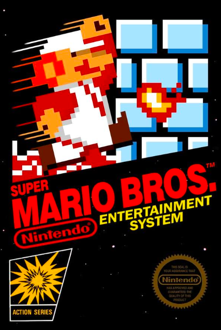
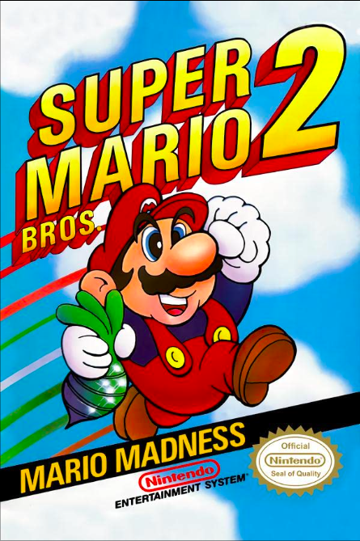
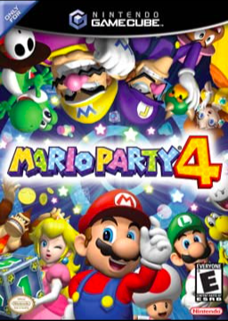
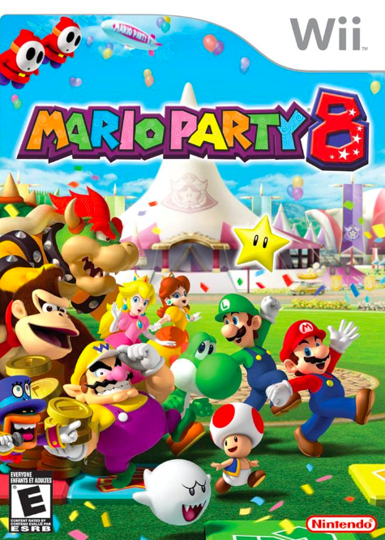
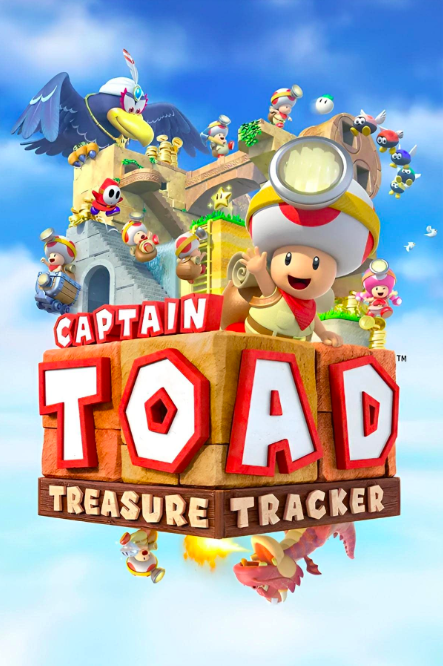
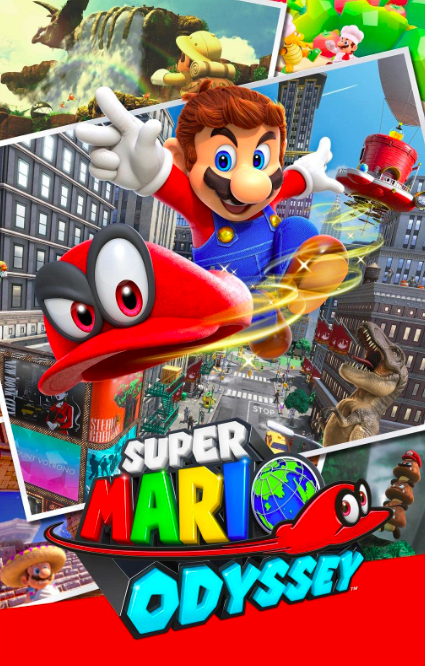

In deze tijdlijn vind je de meest belangrijke mijlpalen van Toad! Race met de auto naar een van de jaartalen en ontdek Toad zijn belangrijkste momenten!
3. 2. 1. GO!
Toad maakt zijn eerste verschijning in "Super Mario Bros." als een niet-speelbaar personage dat Mario informatie en power-ups geeft.
Toad wordt een speelbaar personage in "Super Mario Bros. 2" en wordt gekarakteriseerd als sterk maar langzaam, met de mogelijkheid om snel items te pakken en te gooien.
Toad krijgt zijn eigen spin-off game in "Mario Party 4", genaamd "Toad's Midway Madness".
Toad wordt een speelbaar personage in "Mario Party 8" en maakt een ontwikkeld deel uit van de belangrijkste cast van personages in de serie.
Toad krijgt zijn eigen spin-off game in "Captain Toad: Treasure Tracker", waarin hij de hoofdrol speelt en schatten moet verzamelen in isometrische niveaus.
Toad wordt een speelbaar personage in "Super Mario Odyssey" en helpt Mario bij zijn avontuur door hem nuttige items te geven.
